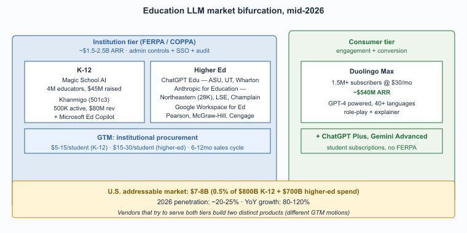

"ChatGPT Edu, Anthropic for Education, Khanmigo. The 2026 education-LLM vendor map is short, but its compliance terms are dense."
Sage, EdTech-Vendor-Reader AI Agent
The education LLM vendor landscape in 2026 has consolidated around four categories: pedagogically-scaffolded tutoring products (Khanmigo, Magic School), language learning (Duolingo Max), university-and-large-district platforms (ChatGPT Edu, Anthropic for Education), and incumbent textbook publishers integrating AI features. This closing section consolidates the vendor list, the in-book cross-references, and the canonical regulatory and pedagogical-research sources.

Prerequisites
This is a vendors-and-further-reading section and assumes familiarity with the earlier sections in Chapter 70.
The 2026 Vendor Landscape
Magic School AI's adoption curve in 2024 was reportedly the fastest of any K-12 SaaS product on record: the company went from 5,000 to 1 million teacher users in 12 months. The founder, a former Texas charter-school principal, reportedly drove a U-Haul truck full of swag to every educator conference in 2024, a marketing strategy that no enterprise sales playbook recommends but that demonstrably worked.
- Khanmigo (Khan Academy). The canonical Socratic-tutor product, GPT-4 powered, free for U.S. teachers since 2024. Covers Khan Academy's curriculum scope (math, science, humanities). Operated by Khan Labs, a 501(c)(3) education nonprofit.
- Duolingo Max. Language-learning tutor with role-play scenarios, "explain my answer" features, and conversational practice. Consumer-tier product distinct from FERPA-tier deployments.
- Magic School AI. K-12 teacher-and-student platform with 130-plus teacher tools and 50-plus student tools, SOC 2, FERPA, COPPA compliant. Dominant in U.S. K-12 district procurement by 2025.
- ChatGPT Edu (OpenAI). Enterprise-tier ChatGPT for universities with admin controls, SSO, FERPA-aligned data terms. Major customer deployments include Arizona State University, Wharton, and the University of Texas system.
- Anthropic for Education. Claude with university-grade controls. Deployed at Northeastern, LSE, Champlain, and several other universities; differentiated on safety properties and document-analysis capability.
- Microsoft Education. Copilot for education with deep integration with Microsoft 365 and the Windows learning ecosystem; particularly strong in K-12 districts on Microsoft licensing.
- Google Workspace for Education. Gemini features integrated across the Workspace tools, with FERPA-aligned terms for school accounts.
- Incumbent textbook publishers. Pearson, McGraw-Hill, Cengage, and Wiley have all built AI tutoring features around their content libraries; the differentiation is content-library scope and the integration with adoption-based curriculum sales.
- Specialty products. Codecademy AI, Khan Academy programming features, Replit Teams, CMU's tutor research, MIT's free OpenLearning tools, and several university-specific deployments.
The structural feature of the 2026 education LLM market is bifurcation by audience. Consumer products (Duolingo Max, free-tier ChatGPT) operate on consumer-tier data-handling terms and focus on engagement and conversion. Institution-tier products (Khanmigo, Magic School, ChatGPT Edu, Anthropic for Education) operate on FERPA-aligned terms and focus on procurement and integration. The two markets share underlying technology but have very different go-to-market motions; vendors that try to serve both typically build two distinct products.
Cross-References Inside This Book
- Chapter 73 (Manufacturing, Creative Industries, Search & Recommendation), the broader survey chapter.
- Appendix A (Course Syllabi), for instructors using this book in a course; the pattern overlaps with educational LLM design.
- Section 53.4 (Licensing, IP & Privacy).
- Chapter 37 (Conversational AI), the underlying chat-tutor architecture.
Canonical External References
- Khan Academy. Khanmigo product home and the Khanmigo blog archive, including ongoing evaluation reports and feature announcements.
- Duolingo. Introducing Duolingo Max, a learning experience powered by GPT-4 (March 14, 2023), the canonical reference for the language-tutoring GPT-4 product.
- U.S. National Center for Education Statistics (NCES). Digest of Education Statistics and Fast Facts series, the standard U.S. source for school-level technology-adoption statistics.
- OECD. Digital Education Outlook 2023, the OECD's comparative-policy snapshot of AI and emerging technologies in K-12 and tertiary education across member states.
- MagicSchool. District-aligned generative-AI platform for K-12 with FERPA and COPPA compliance materials referenced in U.S. school RFPs.
- U.S. Department of Education. Artificial Intelligence in Education portal, the federal landing page for AI-in-education policy briefs and guidance that frames most U.S. state-level rules.
Who. Anthropic's enterprise-education team, with reference deployments at Northeastern University (~28,000 students), the London School of Economics (~12,500 students), and Champlain College (~2,200 students). Situation. Anthropic for Education launched in late 2024 with the value proposition of safety-tier Claude with university-grade data-handling controls, pre-built integration with university SSO and learning-management systems, and explicit support for FERPA-aligned data practices. Problem. Universities procuring an LLM platform face four pressures: (1) faculty want capability; (2) general counsel wants FERPA-aligned terms; (3) IT wants SSO and LMS integration; (4) academic-integrity committees want admin controls and audit. Most consumer LLM tiers fail at (2) and (3), and stand-alone product procurements fragment across colleges. Decision. Northeastern, LSE, and Champlain each signed institution-wide agreements covering students, faculty, and staff, with admin-configurable guardrails (e.g., math-department-specific Socratic-refusal policies, library-research-tutor integrations). How. The data-handling terms specify no training on customer inputs, configurable retention, FERPA-aligned audit logs, and admin override for individual courses and departments. SSO integrates with the university's identity provider; LMS integration uses LTI 1.3. Result. Northeastern publicly reported usage by >70 percent of active students and >85 percent of faculty within nine months of rollout; LSE published a case study on AI-augmented student support. Lesson. The market has bifurcated: institution-tier products (Anthropic for Education, ChatGPT Edu) compete on data-handling and integration, while consumer tier (free ChatGPT, Duolingo Max) compete on engagement and conversion. Universities that try to procure consumer-tier products inevitably renegotiate to institution-tier within 12-18 months.
The global education LLM market reached roughly $3-4B in 2025 ARR across the named platforms, growing 80-120 percent year-over-year. The sub-vertical breakdown is informative. K-12 institution tier: Magic School AI passed 4M educators by mid-2025; Khanmigo reached 500K+ active users; the aggregate U.S. K-12 LLM-tutoring market is roughly $500M-$1B ARR depending on counting methodology. Higher-education institution tier: ChatGPT Edu, Anthropic for Education, Microsoft Education Copilot, and Google Workspace for Education together cover thousands of universities with combined ARR of $1-1.5B. Consumer tier: Duolingo Max passed 1.5M+ paying subscribers at ~$30/month, putting it at ~$540M ARR alone; ChatGPT Plus and Gemini Advanced subscriptions captured by students contribute additional revenue.
Funding tracks the segments. Khan Academy operates as a 501(c)(3) nonprofit (no funding round comparison) but reported ~$80M in 2024 revenue. Magic School AI raised $45M at a $150M+ valuation in 2024. Anthropic and OpenAI are well-funded at the firm level; their education segments are not reported separately but appear to be among the fastest-growing enterprise verticals. The economic case is straightforward: U.S. K-12 spends ~$800B/year and U.S. higher education spends ~$700B/year, so even a 0.5 percent allocation to LLM tooling produces a $7-8B addressable market in the U.S. alone. The 2026 market is at ~20-25 percent penetration of that addressable opportunity.
- Section 69.5 (Healthcare LLM Vendors) for the parallel vendor consolidation pattern in the healthcare vertical.
- Section 67.5 (Legal LLM Vendors) for the Harvey, CoCounsel, and Lexis+ AI market structure that informs institution-tier procurement.
- Section 71.5 (Cybersecurity LLM Vendors) for the Microsoft Security Copilot and CrowdStrike Charlotte-style platform-consolidation pattern.
- Chapter 66 (Procurement and Vendor Selection) for the cross-cutting vendor-selection methodology.
- Part XIV (Designing LLM Agent Products) for the platform-product engineering methodology behind these deployments.
Objective
Build a Khanmigo-style Socratic tutor for one-variable algebra using Claude Sonnet 4.7 and the canonical "do not give the answer" system prompt. Run it over a 50-problem subset of the MATH algebra-level-1 dataset, then score it on three dimensions a learning-science reviewer would actually check: hint correctness, scaffolding depth, and answer-leakage rate. The point is to feel how much harder good pedagogy is than good math.
Setup
You need an Anthropic API key, the MATH dataset (Hendrycks et al., NeurIPS 2021, github.com/hendrycks/math) filtered to algebra level 1, and Python 3.10 or later. For the answer-leakage check, the lab uses a second LLM (GPT-4o) as a judge so that one model's blind spots do not score themselves.
pip install anthropic openai datasets pandasSteps
- Sample 50 problems from the MATH algebra-level-1 split with a fixed random seed. Each problem comes with a worked solution; you will need it both for scoring and for the simulated-student conversation.
- Write the Socratic system prompt. The Khanmigo-style constraint is "never give the answer; respond only with a question or a hint that nudges the student one step closer." Encode this as a hard constraint in the system prompt and a soft constraint in the few-shot examples.
- Simulate the student. Use GPT-4o-mini in a separate session to play a curious-but-confused learner. Each conversation runs for up to six turns or until the student arrives at the correct final answer.
- Score on three dimensions. Hint correctness: did each tutor hint contain a true mathematical statement? Scaffolding depth: how many distinct concept references appear across the conversation (substitution, factoring, isolating the variable)? Answer-leakage rate: ask GPT-4o-as-judge whether any tutor turn revealed the final answer directly. The leakage rate is the academic-integrity metric.
- Inspect the failures. The most informative failure mode is the tutor that gives a correct hint but accidentally states a numeric intermediate result that lets the student copy-paste rather than reason. Save five examples for the writeup.
Expected Output
A CSV with one row per problem holding the hint-correctness rate, the scaffolding-depth count, the leakage flag, and whether the simulated student reached the correct answer. With a careful Socratic prompt, leakage rates below 10 percent and student-arrival rates above 70 percent on level-1 algebra are achievable; both numbers drop sharply on level-3 problems, which is the empirical observation behind Khanmigo's domain-specific prompt-engineering investment.
Extension
Re-run the same pipeline on the GSM8K word-problem dataset (Cobbe et al., 2021) and observe how scaffolding strategies that work for symbolic algebra break down on word problems; the tutor's job there shifts from "guide the manipulation" to "build the model," which is a different pedagogical pattern.
Research Frontier: Where Education LLMs Are Heading
Education LLM research is moving past the early phase of "does the tutor work" and into the harder question of "how does it work and for whom." Three threads define the 2024 to 2026 frontier.
On the effectiveness side, the canonical reference remains Bloom's 2-Sigma Problem (Bloom, 1984), and the modern attempt to test whether LLMs close that gap. The most-cited recent study is the Khanmigo experimental evaluation by Kestin et al. (Harvard and MIT, 2024, arXiv:2407.18249), which compared LLM tutoring against active learning in a randomized college physics class and found a Cohen's d of approximately 0.8 in favor of the LLM tutor under specific scaffolding constraints. AutoTutor and the long lineage of intelligent tutoring systems (Graesser et al., 2018, and follow-on work) provide the theoretical baseline that LLM tutors are now compared against.
The OpenAI and Khan Academy partnership publications, the EduBench evaluation framework (Wang et al., 2024), and Anthropic's Constitutional AI for Education work (2024) push the field toward learning-science-grounded design: tutors that scaffold rather than answer, refuse to give away the next step, calibrate their hints to the student's working zone, and adapt across cultural and linguistic contexts. Diligent and Process Reward Models (Lightman et al., 2024) are also being adapted to education for step-by-step verification of student work.
Where the field is heading: rigorous large-scale efficacy trials (the U.S. Department of Education's "What Works Clearinghouse" is preparing standards for AI-tutor evaluation), tutors that personalize to learning trajectories rather than to a single session, and pedagogical-policy DSLs that subject-matter experts can author without ML expertise. The interesting open question is whether the 2-sigma effect generalizes outside of well-instrumented research settings to broad deployment in under-resourced schools, where the equity stakes are highest.
Show Answer
Show Answer
Show Answer
What Comes Next
Chapter 70 ends here. Chapter 71 on cybersecurity turns to the vertical where the same prompt-injection failure mode that constrains educational LLMs is treated as a primary attack vector rather than a pedagogical inconvenience.
What's Next?
In the next chapter, Chapter 71: Defensive (Blue Team) LLM Use Cases, we continue building on the material from this chapter.